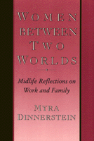

<body bgcolor="#FFFFFF" text="#000000" link="#0000FF" vlink="#CC0000" alink="#CC0000"><center><hr width="350" size="1" align="center" noshade>An in-depth study traces the experiences of 22 middle-class women and their evolution from traditional wives and mothers to career women<hr width="350" size="1" align="center" noshade><p><a href="https://cdcshoppingcart.uchicago.edu/Cart/ChicagoBook.aspx?ISBN=9780877228844&&PRESS=temple" target="_top">Buy this book!</a> | <a href="https://cdcshoppingcart.uchicago.edu/Cart/Cart.aspx?PRESS=temple" target="_top">View Cart</a> | <a href="https://cdcshoppingcart.uchicago.edu/Cart/Cart.aspx?PRESS=temple" target="_top">Check Out</a></p><p></p></center><!--none//--><h1>Women Between Two Worlds</h1>
<H2>Midlife Reflections on Work and Family</H2>
<h3>Myra Dinnerstein</h3>
<P>cloth 0-87722-884-1 $70.50, Jan 92, <FONT COLOR=#990033>Out of Stock Unavailable</FONT>
<br>paper 0-87722-885-X $28.95, Jan 92, <FONT COLOR=#990033>Out of Stock Unavailable</FONT>
<br>Electronic Book 1-43990-422-7 $30.95 <FONT COLOR=#990033>Out of Stock Unavailable</FONT>
<BR> 210 pp
</P><p>Myra Dinnerstein examines the choices and compromises of a generation of women who came of age after World War II. Her in-depth study traces the experiences of twenty-two middle-class women from childhood to adulthood and their evolution from traditional wives and mothers to career women at midlife. Her richly detailed interviews explore the tensions of combining work, marriage, and family life and remind us of the significance of one's social and personal context with respect to the ability to make satisfying choices.
<p>Middle-class women born between 1936 and 1944 have been split between two worlds. As they were growing up, traditional expectations and limited opportunities seemed to make marriage and motherhood inevitable choices. When they reached their thirties, the Women's Movement and expanding opportunities in the workplace presented options for them that had not been available to their mothers. Now it was considered appropriate for women to have ambitions and to act on them&#151and the women described in this book were among those who did.
<BR>&nbsp;<h2>Excerpt</h2><P>Excerpt available at <a href="http://www.temple.edu/tempress">www.temple.edu/tempress</a></p>
<BR>&nbsp;<h2>Reviews</h2>
<p><i>"Dinnerstein examines the two worlds these women have straddled: the traditional one of their youth, which dictated strict boundaries based on gender; and the world in which they have grown to middle age, with its expanding prospects and new tensions for women. ...vivid and powerful quotes illuminate Dinnerstein's timely findings..."</i>
<br>&#151<b><i>Publishers Weekly</i></b>
<BR>&nbsp;<h2>Contents</h2><P>
<p>Preface
<br>Acknowledgments
<br>Study Participants
<br>1. Introduction
<br>2. Growing Up Female: The Possible and the Appropriate
<br>3. Becoming Adult Women
<br>4. At Home
<br>5. From Housewives to Career Women
<br>6. The Persistence of Domesticity
<br>7. Between Two Worlds
<br>8. Conclusion
<br>Notes
<br>Bibliography
<br>Index
</P><BR>&nbsp;<H2>About the Author(s)</H2>
<P><b>Myra Dinnerstein</b> is Research Professor and founding Director of Women's Studies at the University of Arizona. She is co-editor of <I>Changing Our Minds: Feminist Transformations of Knowledge</I>.</P>
<BR><H2>Subject Categories</H2>
<p><A HREF="/tempress/women.html" TARGET="_top">Women's Studies</a>
</p>
<BR><h2 class="inpageheading">In the series</H2>
<P><I><a href="http://www.temple.edu/tempress/women_political.html" onMouseOver="window.status='Click for other books in this series!'; return true;" onMouseOut="window.status=''; return true;" target="_top">Women in the Political Economy</a></i>, edited by Ronnie J. Steinberg.
</p><p>No longer active.<p><i>Women in the Political Economy</i>, edited by Ronnie J. Steinberg, includes books on women and issues of work, family, social movements, politics, feminism, and empowerment. It emphasizes women's roles in society and the social construction of gender and also explores current policy issues like comparable worth, international development, job training, and parental leave.</p>
<p align="center"><a href="https://cdcshoppingcart.uchicago.edu/Cart/ChicagoBook.aspx?ISBN=9780877228844&&PRESS=temple" target="_top">Buy this book!</a> | <a href="https://cdcshoppingcart.uchicago.edu/Cart/Cart.aspx?PRESS=temple" target="_top">View Cart</a> | <a href="https://cdcshoppingcart.uchicago.edu/Cart/Cart.aspx?PRESS=temple" target="_top">Check Out</a></p><p><font face="Arial" size="1"><a href="copyright.html" onMouseOver="window.status='Web Copyright Policy';return true;" onMouseOut="window.status=''" title="Web Copyright Policy">&copy;</a> 2015 <a href="http://www.temple.edu" target="new" onMouseOver="window.status='Link to Temple University home page';return true;" onMouseOut="window.status=''" title="Link to Temple University home page">Temple University</a>. All Rights Reserved. http://www.temple.edu/tempress/titles/850_reg.html</font></p>